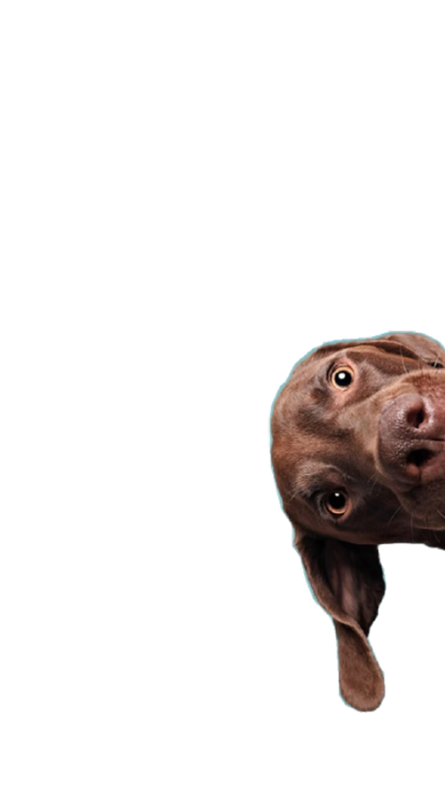

Trabalhamos para
o reencontro

Sobre o MapPet
Nossa missão é usar a tecnologia para reconectar famílias e dar um lar seguro para cada patinha.
Busca Inteligente
Mapeamos geolocalizações para ajudar na busca rápida de animais perdidos na sua região.
Comunidade Unida
Conectamos protetores, ONGs e tutores em uma rede colaborativa de apoio e resgate.
Adoção Responsável
Facilitamos o processo de encontrar um novo lar amoroso para pets resgatados.